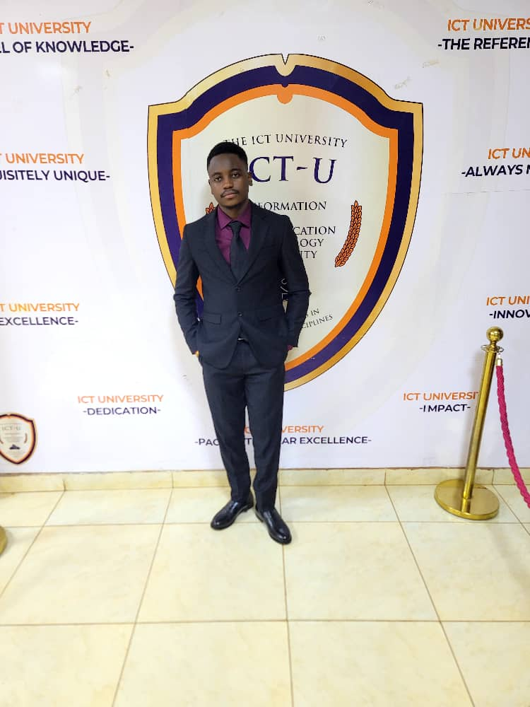

Yaoundé, Cameroon · Available worldwide
I engineer systems that survive reality.
Full-stack, backend, and DevOps engineering for products that need to move from an idea to production—cleanly.
02 / THE OPERATOR
Code is only the
beginning.

I build the whole journey: application logic, distributed infrastructure, automated delivery, and the observability that proves it works.
My flagship platform, Skill-Bridge, runs five event-driven services on Kubernetes—with Kafka, WebRTC, AI-generated quizzes, infrastructure as code, CI/CD, and production monitoring.
I’m open to remote junior software engineering, backend, and DevOps roles. I bring the curiosity to learn fast and the discipline to ship responsibly.
Read the signal ↘systems built
in the toolkit
one flagship build
the next challenge
Python✦Node.js✦React✦Kubernetes✦Kafka✦Terraform✦CI/CD✦WebRTC
03 / SELECTED ORBITS
Systems with
gravity.
Scroll through four builds. Each cloud is a system—layered, connected, and engineered to hold together.
AI-Driven Power
Outage Prediction
A Cameroon-focused system that aggregates outage signals, applies AI classification and zone-level risk scoring, confirms events with evidence, and streams results to a real-time dashboard.
- Python
- FastAPI
- AI/ML
- Socket.IO
- PostgreSQL
- Docker
Skill-Bridge
P2P Learning
Live WebRTC learning, automatic matching, and AI-generated quizzes across five Kafka-connected microservices, deployed to K3s and watched by Prometheus and Grafana.
- Node.js
- Kafka
- Kubernetes
- WebRTC
- Terraform
- Jenkins
Virtual Machine &
Cloud Simulation
A central controller and three simulated VM nodes with replication, heartbeat monitoring, and failover over TCP sockets, gRPC, and multithreading.
- Python
- gRPC
- TCP Sockets
- Multithreading
Academic, Finance
& HR ERP
A Django and React platform covering course management, financial tracking, and employee administration with secure role-based access control.
- Django
- React
- PostgreSQL
- RBAC
04 / OPEN CHANNEL
Have a hard problem
with real stakes?
Let’s turn it into a system that ships.
CONVERSATION↗